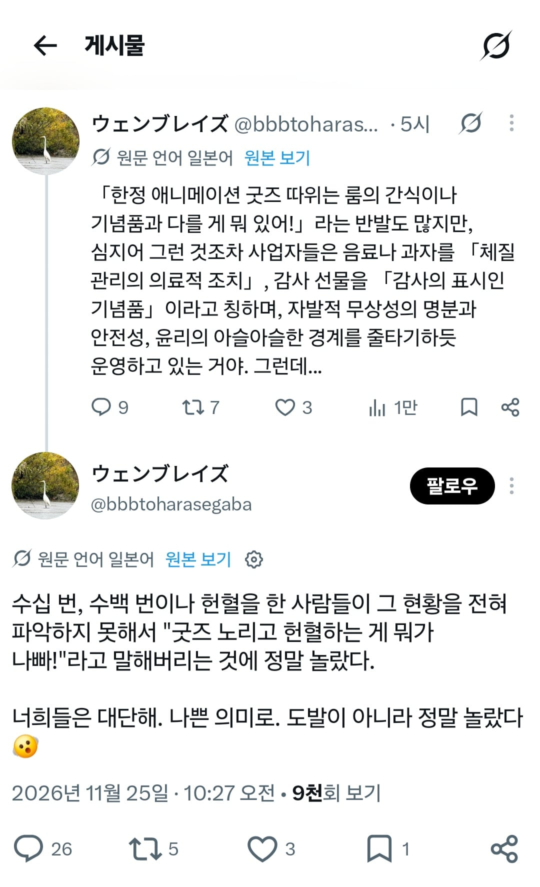
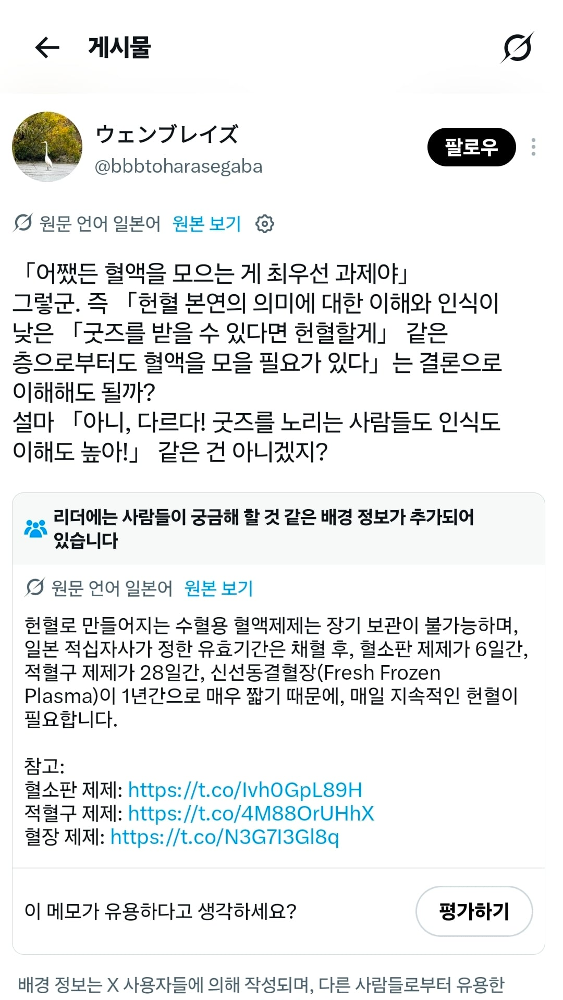
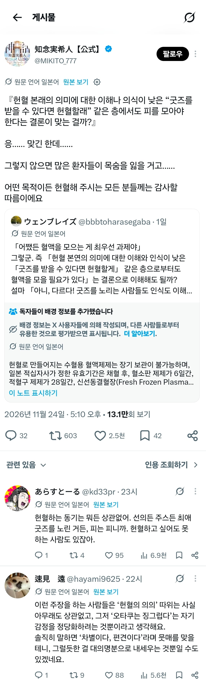
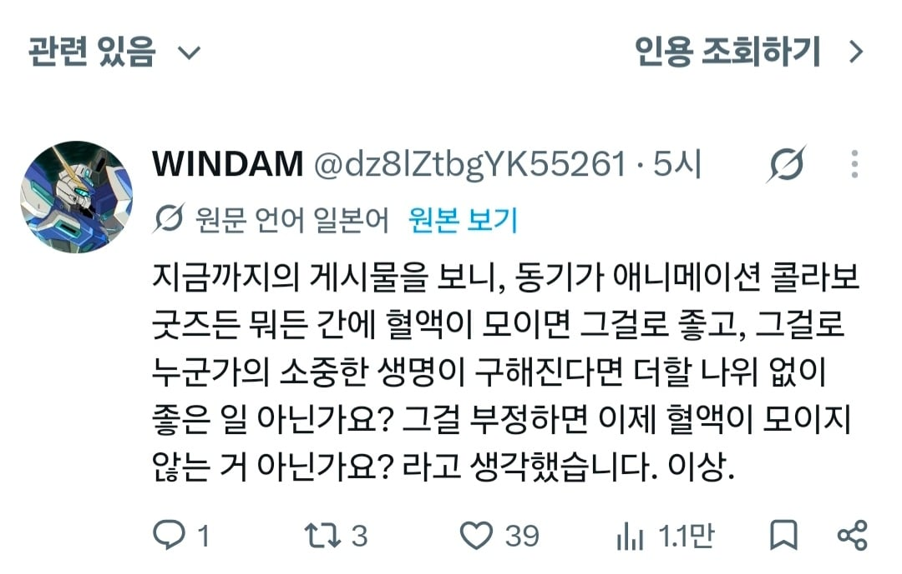
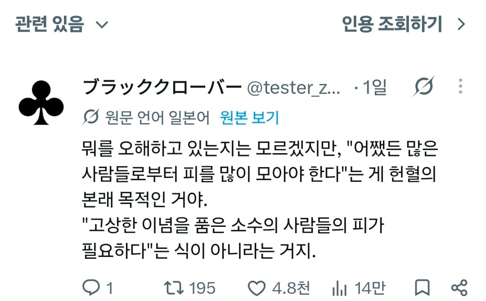
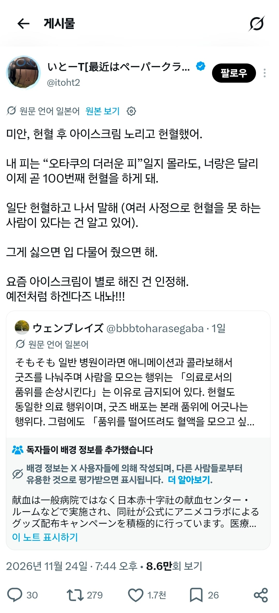
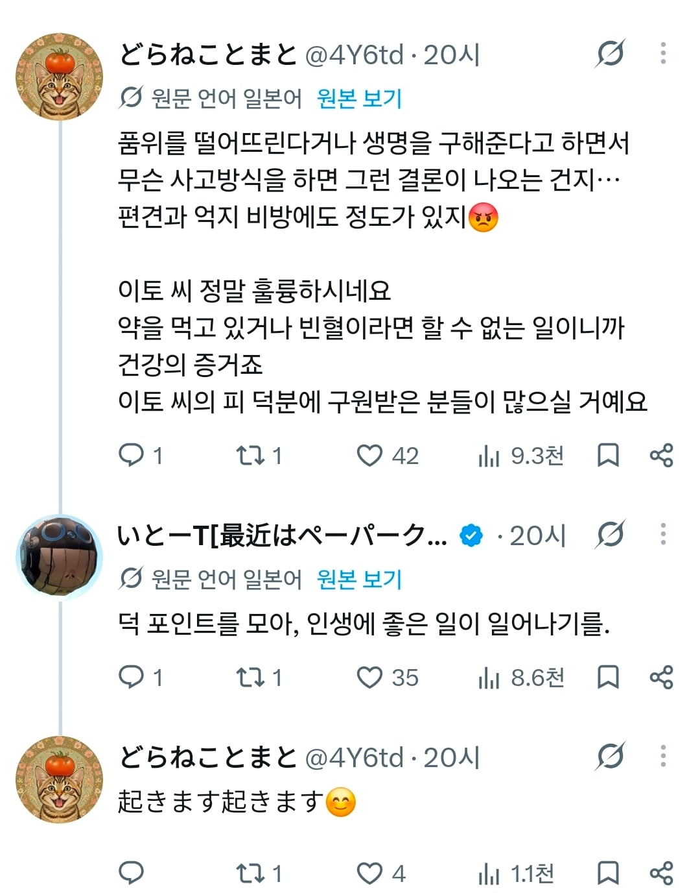
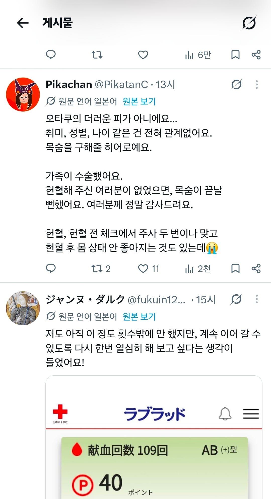

이 사람 포함해서
일부 사람들이
"생명을 구하는 헌혈이라는 숭고한 행위에
굿즈를 얻으려 헌혈하는건 기분나빠!!!!
오타쿠 너희들은 순수하게 사림을 도우려는건 없냐!!!!! "
라고 광역어그로를 끄는 사람들이 등장




그와중에 솔직하게 말하는 사람 등장ㅋㅋㅋ
100회 대단한걸
하겐다즈 내놔!!!!


100회는 무조건 영웅이지
헌혈해주는 사람들은 모두 위대하다!
어디서 숭고한척 ㅋㅋㅋ
한국은 이미 오타쿠 꼬시기하는데 ㅋㅋㅋ
이만한 투구게가 없다!!!!!
찌우고 뽑아가고
찌우고 뽑아가고
찌우고 뽑아가고
난 혈액이 잘 생성되지 않아서 앞으로 헌혈은 꿈도 못 꿀 듯
자연 생성 회복력이 좃나 느림